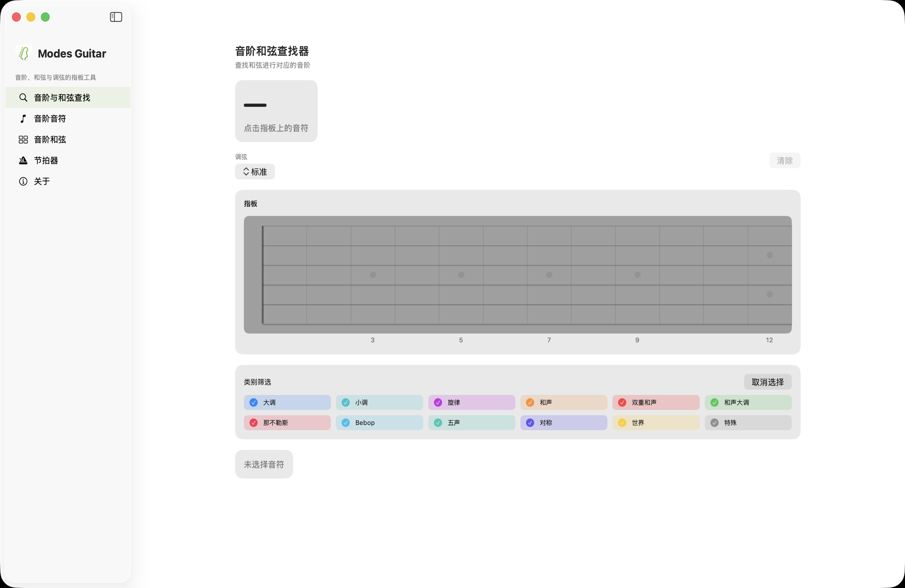
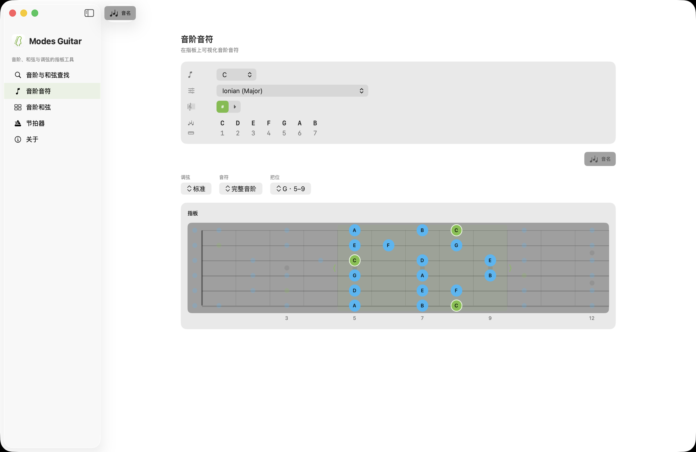
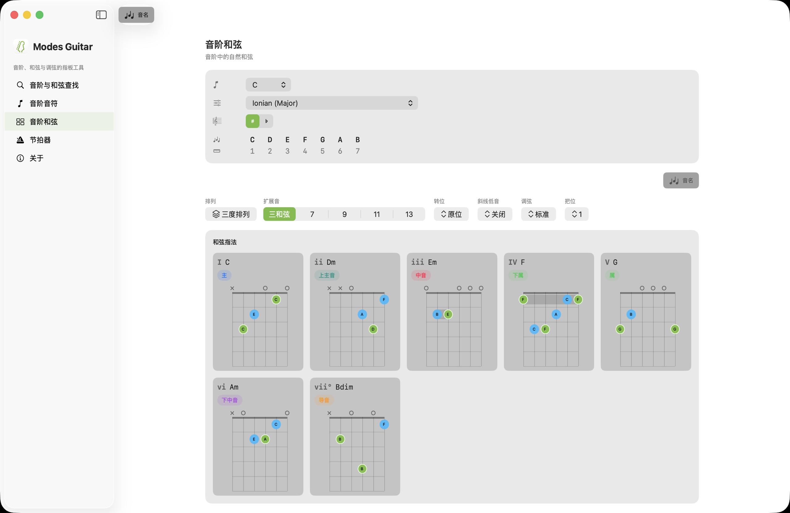
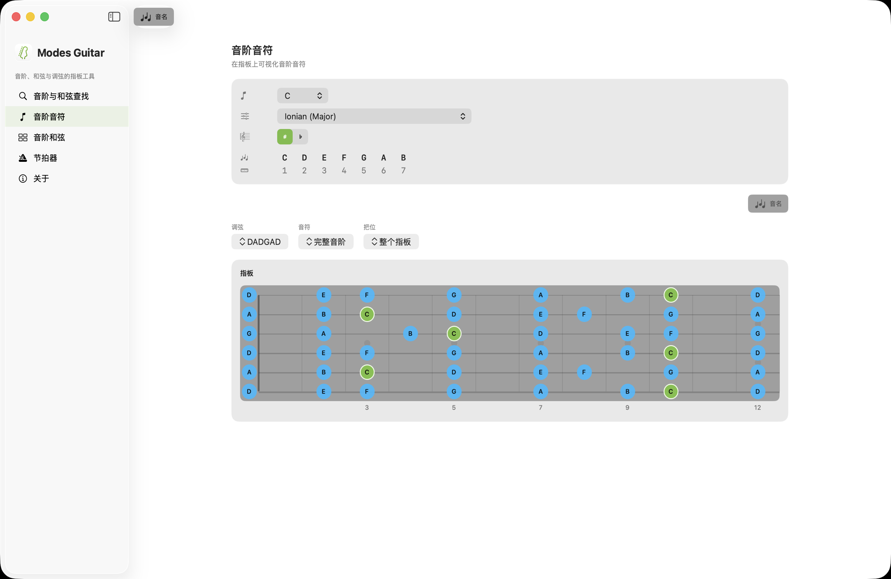
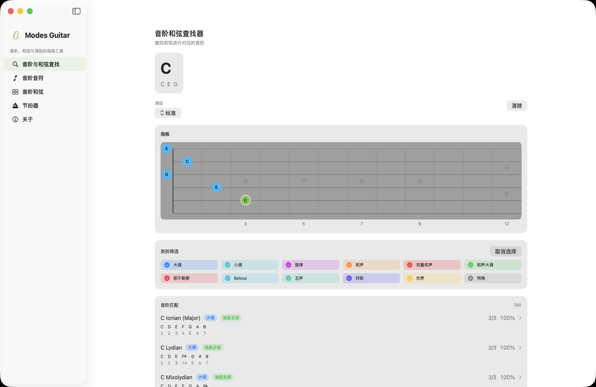
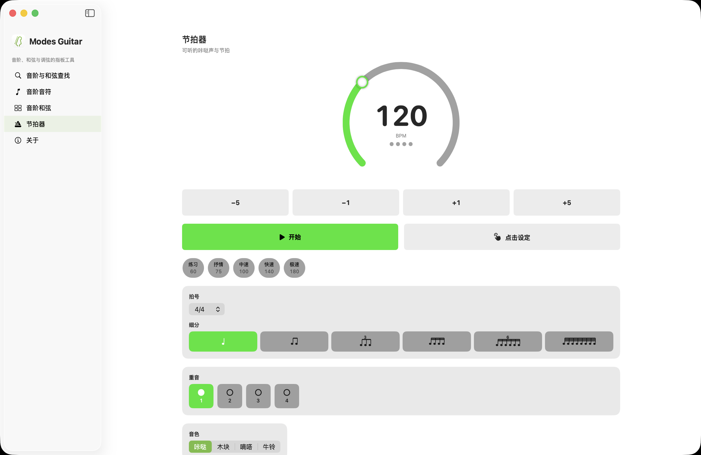
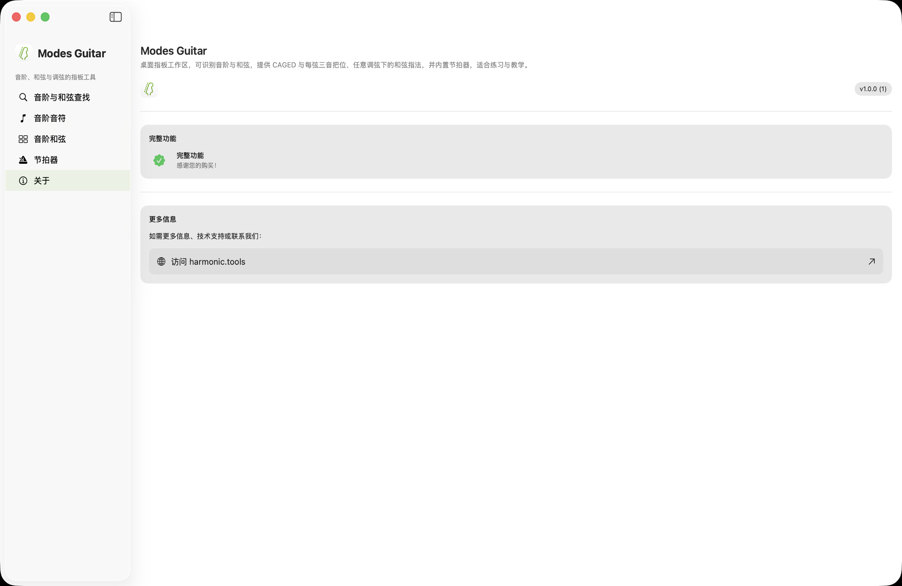

Modes Guitar macOS版
为Mac打造的指板工作区。点按您正在按下的音符，即可了解自己在演奏什么，以CAGED或三音一弦把位铺展任意音阶，在任意调弦下浏览可弹奏的和弦指型，并对着内置节拍器练习这一切——在一款可与您的DAW或课程计划并排使用的侧边栏应用中。
- 直接在琴颈上的音阶与和弦查找器
- CAGED与三音一弦把位
- 任意调弦下的可弹奏和弦指型
- 20种调弦，外加您自己的自定义调弦
- 练习节拍器与Notification Center小组件
截图
包含随网站主题切换的浅色和深色截图。








功能特色
- 音阶与和弦查找器：直接在琴颈上点按您按住的音符。Modes Guitar实时为和弦命名——大调、小调、减和弦、增和弦、延伸和弦、挂留和弦等——并按音符覆盖率对每个匹配的音阶进行排名。按音阶类别筛选以缩小列表，然后直接跳转到该音阶的和弦。
- 指板上的音阶：选择一个根音和一个音阶，看着每个音阶音在整个琴颈上亮起。切换到CAGED把位或三音一弦跑动，在琴颈上上下拖动方框以改变把位，并将音符缩小到三和弦、七和弦、五声音阶或完整音阶，看清指型背后的指型。
- 和弦指型：音阶的每个音级都有真实、可弹奏的把位，配有空弦与闷音标记、横按指示，以及指型位于琴颈高处时的品位数标注。沿琴颈逐一切换把位，选择一个转位，或将任意音阶音强制置于低音以构成斜杠和弦。
- 20种调弦，外加您自己的：标准、Drop D、Drop C、E♭标准、DADGAD、开放G、开放D、七弦、巴里通、四弦与五弦贝斯、尤克里里、班卓琴（五弦、次中音与拨片）以及曼陀林。指型、把位与音名会根据您选择的调弦重新计算，重新调弦时会保留您的指法，让您听到同一指型的变化。或构建您自己的：选择3到8根弦，从任意预设开始逐一凭耳朵调弦。
- 练习节拍器：一台完整的节拍器随行相伴：拍号、细分、摇摆、逐拍重音、四种打点音色、可调音量与触感反馈，还有快速速度和为您正在攻克的乐句保存的预设。
- 小组件：将节拍器保留在Notification Center，无需切换应用即可启动或停止，并获取全新的每日音阶和每日和弦来练习。
为吉他手而设计
- 完全在设备上运行——无需账户、无广告、无追踪
- 无需联网
- 全程支持浅色与深色外观
- 可与您的DAW或课程计划并排使用的侧边栏应用
- 支持11种语言本地化
无论您是学习调式的吉他手、映射新调弦的贝斯手、编写练习的老师，还是追寻下一个和弦的词曲作者，Modes Guitar都将整块指板呈现在您的Mac上。免费试用7天——试用结束后，一次性购买即可解锁完整功能。无订阅。
指板与调弦参考
应用背后的调弦、把位、和弦工具与节拍器功能的完整参考。
20 调弦 + 自定义
2 把位系统
4 音符子集
3–8 自定义弦数
4 节拍器打点音色
调弦
指型、把位与音名会根据您选择的调弦重新计算。重新调弦时会保留您的指法，让您听到同一指型的变化。音符按从低音弦到高音弦的顺序列出。
| 调弦 | 音符（低音 → 高音） | 弦数 |
|---|---|---|
| Standard | E A D G B E | 6 |
| Drop D | D A D G B E | 6 |
| Drop C | C G C F A D | 6 |
| E♭ Standard | E♭ A♭ D♭ G♭ B♭ E♭ | 6 |
| DADGAD | D A D G A D | 6 |
| Open G | D G D G B D | 6 |
| Open D | D A D F♯ A D | 6 |
| Seven-String | B E A D G B E | 7 |
| Baritone | B E A D F♯ B | 6 |
| Bass (4-String) | E A D G | 4 |
| Bass (5-String) | B E A D G | 5 |
| Ukulele | G C E A | 4 |
| Banjo (5-String) | G D G B D | 5 |
| Banjo (Tenor) | C G D A | 4 |
| Banjo (Plectrum) | C G B D | 4 |
| Mandolin | G D A E | 4 |
也可构建您自己的调弦：选择3到8根弦，从任意预设开始逐一凭耳朵调弦。
指板把位
在整个琴颈上铺展任意音阶，并改变您所看到的范围。在琴颈上上下拖动方框以移动把位。
把位系统
音符子集
和弦指型
在当前调弦下，音阶的每个音级都有真实、可弹奏的把位。
- Playable grips — open- and muted-string markers, barre indicators, and a fret-number gutter when the shape sits up the neck.
- Positions — step through the shapes along the neck.
- Inversions — choose which chord tone sits in the bass.
- Slash chords — force any scale tone into the bass.
练习节拍器
为您正在攻克的乐句而设的完整节拍器。
小组件
无需切换应用即可使用节拍器并获取每日乐理。